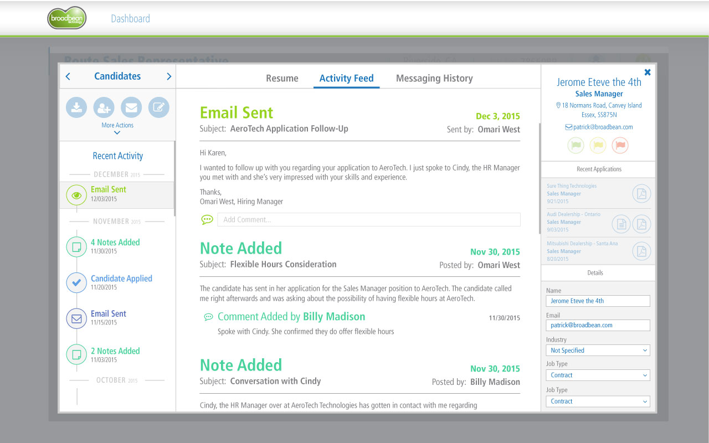

Candidate Sourcing Platform
CSP (Candidate Sourcing Platform) is a HR workflow application built for enterprise clients. The purpose is to allow recruiters to quickly post and manage their jobs on multiple job boards, search for potential candidates, and finally reach out and follow up with their most promising candidates.
Clients include: Hilton, PepsiCo, Geico, and Stryker
To comply with my non-disclosure agreement, I have omitted and obfuscated confidential information in this case study. The information in this case study is my own and does not necessarily reflect the views of Broadbean.
My Role
I led the design of all CSP's main functions: Search, Post, and Candidate Management.
My work consisted of UX Research (user testing), UX Design (wireframing and prototyping), and UI Design (visual design).
Search
Search, as the name applies, allows candidates to search across multiple job boards for potential candidates. Our primary goal for this tool is to minimize the time it takes a recruiter to find a suitable candidate from a list of hundreds of thousands. This meant building a seamless filter that allows recruiters to quickly sift through their list.

Post
The goal of our posting form is to allow the user to quickly fill in the fields needed to publish their job posting as quick as possible. Our previous design presented all the fields in a linear fashion, which commonly reached hundreds of fields to fill out. Our challenge during the redesign consisted of coming up with logical groupings for the text fields, as well as recommended inputs derived from job assocations and data analytics.

Candidate Management
The candidate management tool in CSP allows users to get a detailed view at their current, to see their resume, detailed information, and any communication the recruiting team has had with the candidate. This functionality quickly devolved into a complicated and confusing screen for the user. Our team was given the task to clean up the screen and logically lay out the functionality for the recruiters. The main feature for this redesign was to give the recruiters a quick look at the history of communication for the user, and also give the recruiter the ability to quickly make notes about the candidate.
Results
CSP is still a work in progress and is constantly being revised and iterated upon. The initial redesign that we have accomplished helped streamline the entire process of finding a candidate for recruiters. The modern, updated look was well received across the board, but introduced its own set of problems.
Ongoing Work
As with any software redesign, a learning curve will rear its head once the changes have been launched. We're currently working with users to guide them on how to use the new features as intended as well as document any improvements that are suggested.